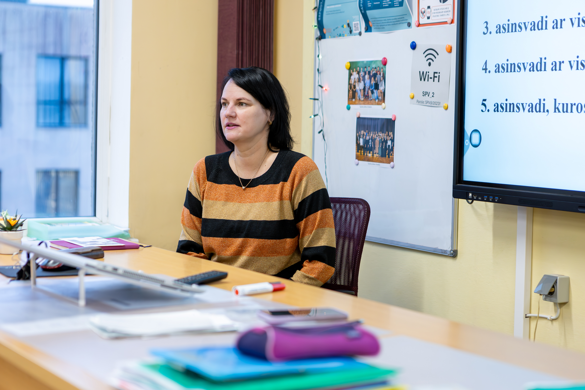

"Ne tikai kļūt gudrākiem, bet kļūt patstāvīgākiem, elastīgākiem un drosmīgākiem cilvēkiem."
Strādā Siguldas pilsētas vidusskolā kopš 2011.gada
Intervētāja: Katrīna Mesle
Cik gadus jūs strādājat Siguldas pilsētas vidusskolā?
Siguldas pilsētas vidusskolā strādāju kopš 2002.gada, kad tā vēl bija Siguldas 2. vidusskola. Tātad šogad — 24 gadus.
Kādu priekšmetu jūs mācāt?
Es mācu bioloģiju, dabaszinības un veselības mācību. Esmu mācījusi arī sportu.
Kas jūs iedvesmoja kļūt par skolotāju?
Man patika sports, un pēc Siguldas Valsts ģimnāzijas beigšanas vēlējos savu nākotnes profesiju saistīt ar sportu. Tāpēc izvēlējos mācīties par sporta skolotāju, bet kā otro specialitāti izvēlējos bioloģiju.
Kāpēc izvēlējāties strādāt tieši Siguldas pilsētas vidusskolā?
Siguldas pilsētas vidusskolā bija nepieciešami papildspēki manās specialitātēs, un skola atradās salīdzinoši ērtā attālumā no mājām.
Kā jūs raksturotu savu pirmo darba gadu skolā?
Nebija tik traki, kā biju domājusi. Man bija ļoti atbalstošs kolektīvs.
Kā jūs raksturotu mūsu skolas skolēnus?
Mūsu skolas skolēniem patīk pētīt un izzināt visu jauno, taču ne vienmēr viņi vēlas iedziļināties un domāt.
Vai skolēni gadu laikā ir mainījušies attieksmes ziņā?
Viennozīmīgi — jā. Agrāk skolēniem bija atbildīgāka attieksme pret mācību darbiem, skolotājiem, vecākiem un skolu kopumā.
Kas motivē skolēnus mācīties visvairāk?
Vērtējumi un tālākizglītības iespējas.
Kā jūs rīkojaties, ja skolēnam nepadodas jūsu priekšmets?
Aicinu uz sarunu, nepieciešamības gadījumā aicinu uz konsultācijām un stundās pievēršu vairāk palīdzošas un motivējošas uzmanības.
Kā jūs palīdzat skolēniem, kuri atpaliek?
Pārbaudes darbos ļauju izmantot pierakstus. Aicinu uz konsultācijām un veicu individuālas sarunas.
Kā tehnoloģijas ir ietekmējušas mācību procesu skolā?
Manuprāt, to ietekme ir gan pozitīva, gan negatīva. Tehnoloģijas atvieglo un padara ērtāku mācību procesu, bet ne vienmēr veicina skolēnu informācijas sistematizēšanas prasmes. Tāpat skolēni ne vienmēr spēj tehnoloģijas izmantot jēgpilni.
Vai skolēni tagad vairāk paļaujas uz tehnoloģijām nekā uz domāšanu?
Tam piekrītu par 100%. Skolēni bieži negrib iespringt un domāt.
Kāds ir bijis lielākais izaicinājums jūsu darbā?
Darbs ar pašpārliecinātiem vecākiem.
Kādi ir lielākie sasniegumi, ko jūsu skolēni guvuši?
Vislielākais sasniegums ir ļoti vāju skolēnu pozitīva izaugsme, mācību gadu noslēdzot sekmīgi.
Vai jums ir kādi spilgtākie vai neaizmirstamākie notikumi skolā?
Jā, protams. Jebkurš 9. vai 12. klases izlaidums ir spilgts un neaizmirstams notikums.
Kā jūs redzat skolas nākotni? Vai sagaidāt pārmaiņas vai uzlabojumus?
Jā, ļoti ceru uz skolas renovāciju.
Vai jums stundās ir bijuši neaizmirstami vai smieklīgi gadījumi?
Jā, tādi gadījumi ir bijuši. Piemēram, reiz skolēniem tika izdalīts nepareizās klases un tēmas pārbaudes darbs, bet neviens no viņiem neatļāvās to pateikt.
Kas jums visvairāk patīk skolotāja darbā?
Visvairāk man patīk redzēt skolēnu pozitīvo izaugsmi un prieku par sasniegumiem.
Kā jūs raksturotu darba kolektīvu skolā un sadarbību ar citiem skolotājiem?
Mums ir atbalstoši kolēģi, draudzīgs un saliedēts kolektīvs, kā arī atsaucīga skolas vadība.
Kā jūs redzat izglītību nākotnē?
Manuprāt, skolotāja loma nākotnē nesamazināsies, un skolēnu atbildība pret izglītības nozīmi pieaugs.
Ko jūs novēlētu nākamajām skolēnu paaudzēm?
Domāt patstāvīgi un nebaidīties no neziņas. Ne tikai kļūt gudrākiem, bet arī patstāvīgākiem, elastīgākiem un drosmīgākiem cilvēkiem.
SĀKUMS